실세계 로봇 응용을 위한 강화학습 방법을 구현할 때 핵심적인 난제 중 하나는 적절한 보상 함수를 설계하는 일이다. 필드 로보틱스에서는 풍부한 데이터셋의 부재, 제한된 훈련 시간, 환경 조건의 큰 변동으로 인해 이 과제가 한층 더 복잡해진다. 본 논문에서는 로보틱스 분야의 최신 연구에서 일반적으로 사용되는 시각 표현과 함께 보상 학습 기법을 검토한다. 또한 시각 관찰을 토대로 과제 완료의 진행 단계와 보상을 연관시키기 위해 선행 연구에서 제안한 실용적 접근법을 조사한다. 이 접근법은 통제된 실험실 조건에서 입증된 바 있다. 본 연구에서는 여름, 가을, 겨울의 세 계절에 걸쳐 야외에서 시험한 실제 규모의 필드 응용인 자율 파일 로딩에 이 접근법을 적용할 잠재력을 연구한다. 본 프레임워크에서 누적 보상은 공정 단계와 과제 완료 여부인 종단 단계에 관한 예측을 결합한다. 예측 모델을 훈련하기 위해 지도 분류 방법을 사용하고, 가장 일반적인 최신 시각 표현을 조사한다. 종단 단계 예측에는 과제 특화 대조 특징을 사용한다.
키워드: 시각 보상, 시연으로부터의 학습, 강화학습, 필드 로보틱스, 토공, 시각 표현
Sutton과 Barto가 설명한 고전적 강화학습(Reinforcement Learning, RL) 아키텍처에서 에이전트는 환경에 action을 가하고, 보상 형태의 피드백을 받으며, 환경의 상태를 관찰한다(그림 1A 참조). 수집된 경험은 에이전트의 policy를 갱신하는 데 사용된다. 이 과정은 에이전트가 원하는 행동으로 수렴할 때까지 반복된다. 보상은 과제의 목표를 부호화한다. 예를 들어 로봇이 과제 완료에 가까울수록 보상이 커진다. Kaiser 등의 연구와 Yu 및 Rosendo의 연구에서 RL은 시뮬레이션 환경에서 인상적인 결과를 보였으며, Zhu 등, Koert 등, Veiga 등의 연구에서는 통제된 실험실 조건의 로봇 과제에서도 그러한 결과를 보였다. 필드 로보틱스에서 볼 수 있는 실세계 대규모 응용에서는 환경의 완전한 상태를 받을 수 없다. 대신 로봇은 센서를 통해 환경 상태의 관찰만 획득한다(그림 1B 참조). 더욱이 이러한 과제에는 대개 장기 범위 의사결정이 필요하고, 보상 함수도 설계하기 어렵다. Osa 등은 문헌에서 보상 학습을 역강화학습 문제로 지칭한다. 훈련 샘플의 양이 제한되고 RL 알고리즘의 훈련 시간이 제약되는 상황에서 환경과의 상호작용을 통해 온라인으로 보상 함수를 학습하는 일은 어렵다. 바람직한 해법은 사전에 수집한 경험을 이용하여 환경 관찰로부터 보상을 추정하는 것, 즉 시연으로부터의 학습으로 보상을 추정하는 것이다.
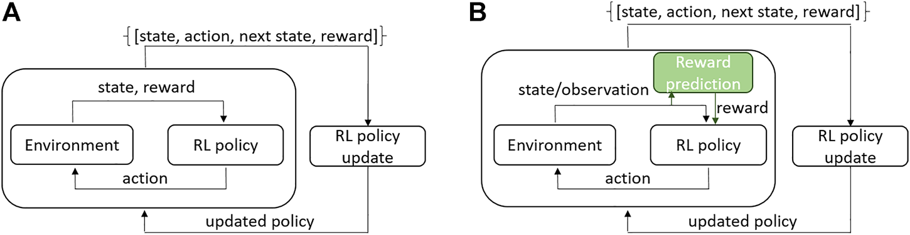
본 논문에서는 다단계 로봇 응용을 위한 시각 보상 추정 문제를 다루고, 조건이 크게 변할 때 그 신뢰성을 연구한다. 시험 사례는 변화하는 야외 기상 조건에서 실제 규모의 로봇 휠로더로 구현한 자율 파일 로딩 과제이다.
파일 로딩은 중장비 이동 기계를 위한 토공 자동화에서 가장 어려운 과제 중 하나이다. 이는 부분적으로 도구와 재료 사이의 상호작용을 모델링하기 어렵기 때문이며, Dadhich 등이 이 문제를 다루었다. 또한 작업장과 연중 기상 조건의 변동이 크다는 점도 원인이다. 기상 조건은 재료의 특성, 기계 유압계의 특성, 지면의 특성에 영향을 미친다. Sotiropoulos와 Asada가 검토했듯이, 파일 로딩이나 굴착 자동화에 관한 최신 연구의 대다수는 모델 기반이거나 휴리스틱을 사용하며 시뮬레이터 또는 소형 시험 장치에서 실험되었다. 따라서 이러한 방법이 실제 작업장에서 얼마나 잘 작동하는지는 분명하지 않다. 최근 Azulay와 Shapiro, 그리고 Backman 등은 강화학습 기반 자율 파일 로딩을 구현했지만, 이 역시 소형 또는 시뮬레이션 시험 장치에서 입증되었다. 기존의 진전과 Yang 등의 연구에서 얻은 저자들의 경험은 이 실세계 문제가 복잡함을 보여준다. Dulac-Arnold와 Mankowitz는 실세계 RL의 아홉 가지 난제를 보고했으며, 그중에는 샘플 효율성, 안전 제약, 시스템 구동기의 크거나 알려지지 않은 지연, 고차원 상태 및 action 공간 등이 포함된다. 본 연구에서는 이 난제 가운데 하나인 보상 학습에 초점을 맞춘다. 구체적으로 시연으로부터 학습한 실세계 시험 장치를 대상으로 비전 기반 보상 추정을 조사한다.
본 연구의 실험 장치는 그림 2와 같다. 로봇 휠로더가 재료 더미를 적재한 뒤 붐을 들어 올리는 과제를 수행한다. 휠로더에는 자기중심적 시점을 제공하는 스테레오 카메라가 장착되어 있다. 이는 전문가 지식을 사용하더라도 적절한 보상 함수를 설계하기 어려운 장기 범위 과제이다.
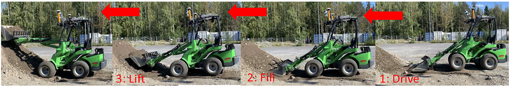
Ho와 Ermon, Fu 등, Ghasemipour 등의 여러 선행 연구는 온라인에서 보상과 policy를 함께 학습할 것을 제안한다. 저자들이 아는 한, 크게 변화하는 실세계 조건의 장기 범위 과제에 이 방법을 적용한 사례는 없다. 더욱이 장기 범위 과제에서는 보상 함수의 초기 근삿값을 확보하는 것이 바람직하다. Sermanet 등은 단계 기반 시각 보상 추정 접근법을 제안하고 통제된 실험실 조건의 문 열기 과제에서 이를 입증했다. 이 접근법은 과제 단계에 관해 전문가가 제공해야 하는 정보가 최소한에 불과하고 처음에는 오프라인으로 학습할 수 있으므로 필드 로보틱스 응용에 매력적이다. 그림 3은 파일 로딩 과제에서 이러한 보상이 어떻게 나타나는지를 예시한다. 각 시간 단계에서 보상은 과제의 단계와 연관된다. 이와 더불어 Yang 등의 연구에서 행동 복제 제어기를 훈련할 때 우수한 성능을 보인 과제 특화 시각 특징을 사용하여 과제 결과에 기반한 희소 보상 예측을 연구한다. Sermanet 등의 연구와 달리 본 연구에서는 시간 대조 표현, 깊이, 선별된 심층 특징을 포함한 여러 시각 표현의 결과를 보고한다. 또한 중간 단계 보상과 희소 종단 단계 보상을 누적 보상으로 결합할 수 있다고 제안한다.
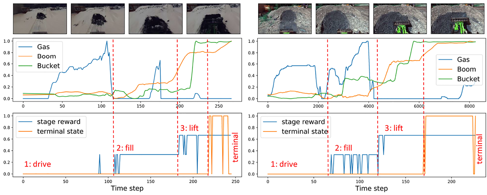
요약하면 본 연구의 기여는 다음과 같다.
본 논문에서는 목표 지향적 에피소드 학습 문제를 추상화하기 위해 유한 마르코프 결정 과정(Markov Decision Process, MDP)을 채택한다(Sutton and Barto, 2018). 이는 강화학습 문헌에서 표준적으로 사용되는 추상화이다. 자율 에이전트는 환경과의 상호작용을 통해 학습한다. 각 시간 단계 t = 0, 1, …, T에서 에이전트는 환경의 상태 st ∈ S를 받아 수행할 행동 at ∈ A(s)를 선택하고, 환경으로부터 보상이라 부르는 피드백 Rt+1 ∈ ℝ을 받는다. 각 시간 단계에서 받는 보상을 즉시 보상(immediate reward)이라 하며, 에이전트의 목표는 시간 범위 T 안에서 얻은 보상의 합으로 정의되는 누적 보상을 최대화하는 것이다. 각 즉시 보상에는 할인 인자를 적용할 수 있으며, 이는 에이전트가 즉시 보상과 미래 보상을 각각 얼마나 중시하는지를 조절한다. 에이전트가 받는 누적 보상은 다음과 같이 나타낼 수 있다.
r = Σ_{t=1}^{T} γ^(t−1) R_t(s_{t−1})
본 연구에서 연속된 시각 관측 집합 D = {(on, ln)}n=1N은 시각 관측 on과 레이블 ln의 쌍으로 이루어진다. N은 이용 가능한 관측-레이블 쌍의 총수이다. 시각 관측은 자기중심적 시야를 제공하는 스테레오 카메라의 좌측 RGB 프레임 영상이다. 새로운 표기법을 도입하지 않기 위해 Rt(·)를 상태 또는 관측에서 보상으로의 매핑을 정의하는 데 사용한다. 따라서 시각 입력으로부터 학습된 예측기인 근사 함수 r̃ = Rt(ot−1)를 학습한다. 장기 시간 범위 과제, 특히 실제 환경의 문제에서는 보상을 과제 완료의 진행도와 연결하는 것이 유익하다. 본 프레임워크에서는 중간 단계 분류기와 종결 단계 분류기로부터 시각 표현을 학습한다. 그 목적은 필드 로보틱스 응용의 조건이 크게 변하는 상황에서 어떤 시각 표현이 유용한지 연구하는 것이다. 또한 Stooke et al. (2021)의 최근 연구는 모방학습 과제에서 시각 표현과 정책(policy)을 따로 학습하는 편이 더 유익함을 보였다.
보다 구체적으로, 상태 관측 ot와 환경 동역학을 지배하는 전이 동역학 외에도 장기 시간 범위 과제를 위한 하위 목표들과 최종 목표가 존재한다고 가정하며, 이를 단계(stage)라 부른다. 또한 이러한 하위 목표 또는 중간 단계는 순차적이라고, 즉 시스템이 성공하려면 하나를 다른 하나보다 먼저 수행해야 한다고 가정한다. 이를 S0, S1, S2, ST로 나타내며, 여기서 ST는 종결 단계이다. 지도학습 방법을 사용하므로 단계는 수동으로 레이블링되는 클래스를 정의한다. 보상 r은 기계가 수행 중인 작업 공정의 단계와 연관된다. 각 시간 단계에서 시스템은 분류 모델을 사용해 기계의 시각 관측 ot를 공정 단계와 연결한다. 두 가지 과제, 즉 작업 공정 단계의 예측과 과제 완료 여부(종결 단계)의 예측이 있다. 따라서 두 개의 훈련 집합을 사용한다. 단계 예측에는 D = {(f(ot), ct): ct ∈ C = {0, 1, 2}}를, 종결 단계 예측에는 G = {(f(ot), ct): ct ∈ C = {−1, 1}}를 사용한다. 단계에 관한 예측을 단계 기반 보상 RtS(ot−1)이라 하고, 완료에 관한 예측을 종결 단계 보상 RtE(ot−1)이라 한다. 식 (1)에 따라 누적 보상은 다음과 같이 계산한다.
r = Σ_{t=1}^{T} γ^(t−1) [R_t^S(o_{t−1}) + R_t^E(o_{t−1})]
이 절에서는 하위 단계와 최종 상태를 예측하는 분류 모델의 훈련을 위해 조사한 시각 특징을 설명한다. 분류 파이프라인의 첫 단계는 분류 단계로 전달할 임베딩 f(ot) ∈ 𝒳를 계산하는 것이다. 여기서 𝒳는 특징 공간을 뜻한다. 다음으로 중간 단계 보상을 위한 임베딩 학습에 대해 조사한 방법을 제시하고, 이어서 종결 단계 보상을 위한 방법을 제시한다. 본 연구에서는 임베딩 f(ot)가 시스템의 특징 입력으로 기능하므로 임베딩과 특징이라는 용어를 서로 바꾸어 사용한다.
이 절에서는 중간 단계 보상에 사용되는 여러 최신 임베딩을 소개한다. 사전 훈련된 심층 CNN 특징, 시간 대조 표현(time-contrastive representation), 깊이, 방향성 기울기 히스토그램(Histogram of Oriented Gradients, HOG) 기술자를 조사한다. 특징 학습에는 앞에서 설명한 것과 동일한 클래스 레이블을 사용한다. 이 레이블에는 수동으로 지정한 단계가 담겨 있다.
선별된 심층 시각 특징(VGG) — 실험에서 심층 특징 임베딩 f(ot) ∈ 𝒳를 추출하기 위해 사전 훈련된 VGG 모델(Simonyan and Zisserman, 2015)을 사용했다. 동일한 접근법에 따라 분류 과제에서 판별력이 가장 높은 특징을 식별하기 위한 별도의 선별 절차를 적용했다. 이를 위해 훈련 집합에서 각 클래스의 각 특징 i에 대한 평균과 표준편차를 계산했다.
z_i = α |μ_i^+ − μ_i^−| − (σ_i^+ + σ_i^−)
여기서 μi+와 σi+는 동일 클래스 내 특징의 평균과 표준편차이고, μi−와 σi−는 나머지 클래스에 대한 값이다. 클래스 레이블은 실측 자료(ground-truth data)를 통해 알려져 있다. 각 클래스에서 zi 점수가 가장 높은 특징 200개를 선별했다. 그 결과 모든 클래스에서 상위 점수를 얻은 심층 특징은 29개였다. 모든 클래스에 걸쳐 높은 점수의 특징이 충분히 존재하도록 200이라는 값을 경험적으로 선택했다. 이 접근법의 한 가지 단점은 환경이 변할 때 특징 공간의 드리프트로 인해 선별 절차의 성능이 저하될 수 있다는 점이다.
시간 대조 표현(TCR) — TCR은 모방학습 과제뿐 아니라 객체·얼굴·행동 인식 및 정렬에서도 견고한 임베딩 맵을 제공하는 것으로 나타났다(Sermanet et al., 2017a; Schroff et al., 2015). 여기서는 TCR을 이용한 실험을 설명한다. 과제의 동적 특성을 포착하기 위해 시간 t에서 분류 시스템에 입력되는 xt는 d개 영상 프레임의 스택이다.
x_t = (o_{t−d+1}, …, o_{t−1}, o_t)
여기서 ot는 RGB 영상 관측이다. 실험에서는 단일 관측 영상 ot의 크기를 64 × 64로 축소했고, 프레임 수 d는 5로 했다. 각 단계에서 훈련 집합으로부터 임의의 입력 시퀀스 It = (xt, xt+1, …, xt+n)를 선택하고, 임의의 앵커 입력 스택 xi: t ≤ i ≤ t + n을 샘플링한다. 양성 입력 스택 xi+는 창 (xi−L, xi+L)에서 샘플링하며, 여기서 L은 고정된 창 크기이다. 음성 샘플 xi−는 시퀀스 It 안에서 이 창 밖에 있는 항목 중 무작위로 선택한다. 앵커 입력, 양성 입력, 음성 입력을 훈련 집합에 추가한다.
fθ(xi)가 매개변수 θ를 갖는 특징 추출(임베딩) 네트워크를 나타낸다고 하자. 앵커 xi, 양성 샘플 xi+, 음성 샘플 xi−가 주어졌을 때, 특징 공간에서 양성 샘플은 앵커에 더 가까워지고 음성 샘플은 더 멀어지게 하는 손실을 정식화한다. 따라서 임베딩 f(xi)는 다음을 만족해야 한다(Sermanet et al., 2017a).
‖f(x_i) − f(x_i^+)‖₂² + α < ‖f(x_i) − f(x_i^−)‖₂², ∀ (f(x_i), f(x_i^+), f(x_i^−)) ∈ Γ
여기서 α는 경험적 매개변수이고 Γ는 훈련 집합에 존재할 수 있는 모든 삼중항의 집합이다. 훈련 집합이 제한적이므로 훈련을 더 견고하게 만들기 위해 최신 비디오 프레임 보간 방법인 DAIN(Depth-Aware Video Frame Interpolation)(Bao et al., 2019)을 사용했다.
선별된 HOG 특징 — 고전적 방법을 대표하는 HOG도 실험했다. HOG는 시각 인식 과제에서 우수한 성능을 보였다(Lowe, 2004; Dalal and Triggs, 2005). HOG는 방향성 기울기 히스토그램 기술자를 뜻한다. HOG 기술자(임베딩)는 국소 밝기 기울기 또는 에지 방향의 분포로 영상을 특징짓는다. 대응하는 기울기나 에지의 정확한 위치를 알지 못하더라도 이 정보만으로 상당히 충분하다는 것이 밝혀졌다. 임베딩 f(ot)는 영상을 작은 공간 영역들로 나누고 각 영역의 픽셀에 대해 기울기 방향 또는 에지 방향의 국소 히스토그램을 누적하여 계산한다. 결합된 히스토그램 성분들이 임베딩을 이룬다. 조명과 그 밖의 조건에 대한 불변성을 높이기 위해 고정 블록 안의 국소 응답을 L1 정규화를 사용해 대비 정규화한다. v를 정규화되지 않은 기술자 벡터, norm v1을 그 1-노름, η를 작은 상수라 하자. 정규화는 벡터의 각 값을 그 노름으로 나누어 vn = v/(norm v1 + η)로 수행한다. HOG 표현을 계산할 때 sklearn 구현1을 사용한다.
깊이 특징 — 깊이 영상을 얻기 위해 실외 환경의 KITTI 데이터셋으로 사전 훈련된 최신 깊이 계산 모델 MonoDepth2를 사용했다. 그런 다음 고정된 영상 위치들의 깊이 값 배열을 특징으로 정의한다.
현재 에피소드에서 과제가 완료되었는지를 나타내는 희소 보상 신호를 정의한다. 실제로는 각 시간 단계에서 종결 단계에 도달했는지를 예측한다. 종결 단계를 예측하는 접근법은 TCR과 유사하다. 이를 위해 앞서 적재 더미 로딩 과제의 행동 복제에서 훈련하고 입증한 과제 특화 시각 특징을 사용한다(Yang et al., 2020). 해당 연구에서는 여름 데이터로 특징을 훈련하고 여름/가을 기간에 시험했다. 훈련 목표는 네트워크가 성공 샘플(버킷이 가득 차 과제가 완료됨)과 실패 샘플(버킷이 비었거나 과제가 끝나지 않음)을 구별하도록 학습하는 것이었다. 주 목표에는 표준 교차 엔트로피 손실이 잘 작동했다. 그러나 분류를 위한 교차 엔트로피 손실에 더해, 시각 특징 추출을 제약하기 위한 대조 손실(contrastive loss)(Hadsell et al., 2006)을 추가했다. 양성 예제 내의 특징들은 특징 공간에서 서로 가까워야 하고 음성 예제와는 멀어야 한다. 실험 절에서 설명하듯 샘플은 수동으로 레이블링했다. 대조 손실은 특징 거리가 중요해지는 원샷 학습 과제와 메트릭 학습 과제에서 사용되어 왔다(Koch et al., 2015).
여기서 학습 과정은 시간 대조 표현(TCR)과 유사하다. 차이점은 TCR에서는 인스턴스의 삼중항을 샘플링하지만 여기서는 쌍을 샘플링한다는 것이다. x1, x2 ∈ Z를 입력 샘플이라 하자. TCR과 마찬가지로 RGB 영상 스택을 입력으로 사용한다. TCR에서는 데이터 샘플링이 식별된 클래스가 아니라 시간 창 접근법에 기반했으므로 시간 대조 손실만 사용했다. 여기서 양성 샘플은 종결 단계에 속하고 음성 샘플은 그렇지 않다. 샴 분류 네트워크 fθ(x)에서 임베딩을 훈련하며, 표준 교차 엔트로피 손실 Lce(Bishop, 2006)와 대조 손실 Lc를 다음과 같이 결합한다.
L = λ₁ L_ce(f_θ(x)) + λ₂ L_c
여기서 λ1 = 0.6과 λ2 = 0.4는 각 손실의 가중치를 나타낸다.
대조 손실은 다음과 같이 정의한다.
L_c = {
max(0, m − D(x₁, x₂))², if x₁ ∈ Z⁻, x₂ ∈ Z⁺
D(x₁, x₂)², if x₁, x₂ ∈ Z⁺
}
D = ‖f_θ(x₁) − f_θ(x₂)‖₂
여기서 x1과 x2는 가중치를 공유하는 샴 네트워크에 입력되고, D(x1, x2)는 특징 사이의 유클리드 거리이다. 위 손실 함수를 최소화함으로써 양성 샘플에 속한 입력들의 특징은 서로 가까워지고 서로 다른 집합에 속한 입력들의 특징은 더 멀어지도록 네트워크 매개변수를 훈련한다. 매개변수 m(m > 0)은 스프링 모델의 유추에 기반한 마진 값이다(Hadsell et al., 2006). 마진은 음성 샘플이 손실 함수에 기여하는 반경을 정의한다. m의 값은 대조 클래스 내 특징 분포에 따라 달라진다. 본 연구에서는 m = 0.3을 경험적으로 선택했다. m은 TCR의 α 매개변수에 해당한다. 더 많은 훈련 예제를 생성하고 훈련을 더 견고하게 만들기 위해 비디오 프레임 보간 DAIN(Bao et al., 2019)과 영상 데이터 증강도 사용했다.
이 절에서는 분류 모델을 학습하는 데 사용한 분류 방법을 설명한다.
K-최근접 이웃(KNN) — KNN은 데이터 분포에 대해 어떠한 가정도 하지 않는 간단한 비모수 분류 방법이다(Duda et al., 2012). 새로운 각 시험 샘플에 대한 결정은 명시적으로 훈련 샘플에 근거한다. 단순성은 이 방법의 장점인 반면, 시험 시점의 계산 복잡도는 단점이다. 새로운 시험 관측 f(oi)를 분류하기 위해 유클리드 거리를 사용하여 특징 공간에서 M개의 최근접 이웃 집합을 식별한다. 이웃 중 다수가 갖는 클래스 레이블을 시험 샘플에 할당한다.
서포트 벡터 머신(SVM) — 다중 클래스 SVM을 일대일 분류로 정식화하여 사용한다. 기본 SVM은 두 클래스 분류 접근법이며, 이를 아래에서 더 설명한다. 따라서 먼저 종결 보상의 두 클래스 분류 문제에 대해 정식화한다. SVM은 y(f(oi)) = wTϕ(f(oi)) + b 형태의 선형 판별 함수를 사용한다. 여기서 ϕ(f(oi))는 임베딩에 대한 고정된 특징 공간 변환(예: RBF 또는 다항식)을 나타내고, b는 편향 항이다. 새 샘플 f(oi)는 y(f(oi))의 부호에 따라 분류된다. 매개변수 w와 b의 선택지 중 ϕ(f(oi))의 고차원 공간에서 두 클래스를 분리할 수 있는 선택지가 적어도 하나 존재한다고 가정한다. 즉, ci = 1인 샘플에서는 y(f(oi)) > 0이고 ci = −1인 샘플에서는 y(f(oi)) < 0이다.
w와 b를 훈련하기 위해 다음 목적 함수를 사용한다: arg maxw,b { (1/‖w‖) minn[cn(wTϕ(f(on)) + b)] }. 이는 두 클래스를 분리하는 지지 초평면으로 정의되는 두 클래스 사이의 마진을 최대화한다.
이 문제는 이차계획 문제로 변환할 수 있으며, 예를 들어 라그랑주 승수법으로 풀 수 있다(자세한 내용은 Bishop, 2006 참조). sklearn의 다중 클래스 구현3을 사용했다.
랜덤 포레스트(RF) — 서로 다른 출력값이 같은 입력값과 연결될 수 있는 데이터 고유의 모호성에 대해 RF 분류가 더 견고하다(Criminisi et al., 2012). 각 트리는 특징의 일부 집합만으로 학습하므로 서로 다른 단계에 관한 중요한 단서를 학습할 수 있다. 랜덤 포레스트 𝓕rf는 결정 트리의 모음이다: 𝓕rf = {𝒯θmm; m = 1, 2, …, M}.
θm은 각 트리 𝒯m의 매개변수를 나타낸다. 결정 트리는 계층적으로 조직된 일련의 질문으로 구성되는 특수한 그래프 구조이다. 결정 트리는 질문에 답함으로써 샘플의 속성을 평가하거나 그 클래스 또는 범주를 식별할 수 있다. 이러한 질문 또는 규칙의 매개변수가 결정 트리의 매개변수이다. 포레스트의 각 결정 트리는 자체 규칙과 훈련 데이터의 하위 집합에 근거해 샘플을 분류한다. 훈련 중에는 각 트리를 따로 훈련한다. 본 연구에서 입력 특징 f(oi)가 주어졌을 때 랜덤 포레스트 𝓕rf가 생성하는 분류 결과는 다음과 같다.
𝓕_rf(x_t) = (1/m) Σ_{j=1}^{M} 𝒯_{θ_j}^j(f(o_i))
즉, 랜덤 포레스트의 출력은 트리들이 생성한 모든 클래스 확률 예측의 평균이다.
𝓕rf의 훈련은 다음과 같이 수행한다. 1) 훈련 집합에서 부트스트랩 데이터 Dbs를 추출한다. 2) 부트스트랩 데이터 Dbs에 대해 분류 트리 𝒯m을 성장시키며, 최대 깊이에 도달할 때까지 각 트리를 적합한다. 각 트리 𝒯m은 다음과 같이 훈련한다. 1) k개 특징 중 n개 특징을 무작위로 선택한다(n < k). 2) n개 중 최적의 변수 분할점을 고른다. 3) 노드를 두 자식 노드로 분할한다. 구현에서 각 트리 𝒯m의 각 노드는 지니 불순도를 최소화하여 훈련한다. 임의의 노드 j와 클래스 Ci에 대해 pj(Ci)는 노드 j에 있는 샘플 중 클래스 Ci에 속하는 샘플의 비율이다. 전체 클래스 수가 M일 때 노드 j의 지니 불순도는 데이터셋에서 무작위로 선택한 원소를 잘못 분류할 확률이며, Σi=1N pj(Ci)(1 − pj(Ci))로 나타낸다.
수행한 실험의 목적은 크게 달라지는 기상 조건에서 단계 기반 보상 평가에 현재 사용되는 표현의 성능을 탐구하는 것이다. 실외 적재 더미 상차 작업에 대한 결과를 제시한다. 이 절의 처음에는 데이터 수집과 그 결과로 얻은 데이터셋을 포함하여 실험 설정의 세부 사항과 작업 설명을 소개한다. 이어서 1) 연구한 시각 표현과 분류 방법을 사용한 단계 발견 결과를 제시하고, 2) 종단 단계 예측을 위한 작업 특화 시각 특징을 시험하며, 3) 단계 정보를 사용해 누적 보상을 계산하는 방법을 보이고 결과를 정성적으로 분석한다.
휠 로더 — 자율 퍼내기는 이른바 GIM 장비라는 로봇 휠 로더에 구현하였다. 이 장비는 상용 휠 로더(Avant 635)의 기계 구조를 갖추고 있으며, 동력 전달 장치와 제어기는 Tampere University에서 맞춤 제작하였다. 버킷은 수직 평면에서 붐 관절과 버킷 관절이라는 두 관절로 위치를 정하고, 수평 평면에서는 구동(스로틀/가속)과 차체 조향 메커니즘으로 굴절시킨다4. GIM 장비에는 GNSS(Global Navigation Satellite System), 휠 오도메트리, IMU(Inertial Measurement Unit), 압력 센서 등을 비롯한 여러 센서가 장착되어 있다.
비전 — 시각 피드백을 얻기 위해 ZED 스테레오 카메라를 사용하였다. 해상도 2560 × 720의 ZED 카메라 영상을 15 fps의 프레임률로 촬영하였다. 단계 분류의 특징으로 사용하는 임베딩을 생성하는 데 왼쪽 RGB 영상을 사용하였다. 실험은 실외 시험장에서 수행하였다(그림 4 참조).
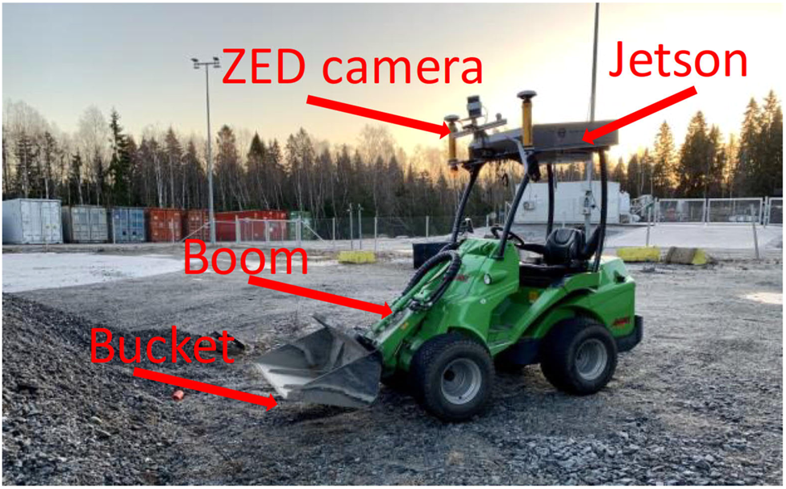
제어 시스템 — 여러 계층으로 구성된다. 최하위 계층(디지털 및 아날로그 I/O와 CAN)에서는 산업용 마이크로컨트롤러가 전력 관리와 기본 안전 기능을 구현한다. PC 제어 계층에서는 대상 PC가 위치 추정과 같은 실시간 작업을 실행하는 Simulink Real-time 모델을 구동한다. 하위 시스템은 온보드 Jetson AGX Xavier(8-Core ARM v8.2 64-bit NVIDIA Carmel CPU 및 64개 Tensor Core를 갖춘 512-core NVIDIA Volta GPU)에서 실행되는 UDP 프로토콜을 통해 저수준 센서 데이터와 제어 명령을 주고받는다. 모든 데이터 수집, 학습 및 폐루프 제어는 Jetson PC에 구현하였다.
실험 워크플로 — 훈련 중에는 TCR 표현(3.2.1절), 희소 종단 보상 표현(3.2.2절), 분류 모델(3.3절)을 계산하는 모델을 학습한다. 시험 시에는 시험 데이터의 각 표본에 수행되는 알고리즘 1의 절차를 따른다.
알고리즘 1. 순차 작업을 위한 시각 보상: 시험 시 실험 워크플로.
입력. 시각 관측: 3.2절에 명시한 RGB 영상 ot 또는 RGB 영상 스택 xt.
성능 지표 — 성능 척도로 백분율 분류 정확도를 사용한다.
정확도 = (정확한 예측 수 / 전체 예측 수) × 100% (10)
본 연구에서는 분류 예측에 근거하여 보상을 부여한다. 예측이 표본의 실측 레이블과 일치하면 올바른 예측이다.
버킷 채우기 작업 — 그림 2는 이 작업의 세 단계, 즉 적재 더미까지 주행하기, 버킷 채우기, 붐 들어 올리기를 보여준다. 지면 상태에 따라 인간 조작자가 이 과정을 수행하는 데 약 30–60 s가 걸린다. 이 작업을 에피소드형 장기 시계열 순차 작업으로 취급한다. 실제 작업이므로 조작자 성능의 변동으로 인해 잡음이 있고 일관되지 않은 시연이 나타날 수 있다. 예를 들어 적재 더미를 싣는 동안(단계 2) 조작자는 더 많은 양을 싣기 위해 여전히 가속을 사용할 수 있다.
초기 조건으로 재설정 — 모든 실험에서 각 에피소드는 동일한 초기 조건에서 시작한다. 버킷은 비어 있고, 휠 로더는 적재 더미에서 일정 거리(1–5 m) 떨어진 곳으로 후진하며, 붐은 낮은 위치에 놓이고, 버킷은 지면과 수평을 이룬다. 장비를 초기 상태로 되돌리는 과정에는 몇 분이 걸린다. 모든 실험에서 상태 기계 알고리즘을 사용해 장비가 특정 관절 값에 도달하도록 사전 프로그래밍함으로써 이 절차를 자동화하였다. 장비가 적재 더미에서 후진하는 거리는 수동으로 정한다.
데이터셋 — 다음 세 데이터 집합을 만들었다.
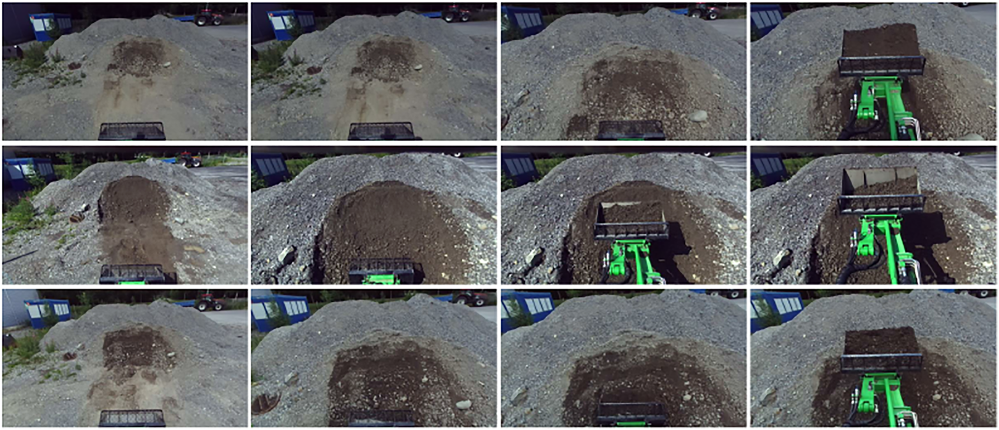
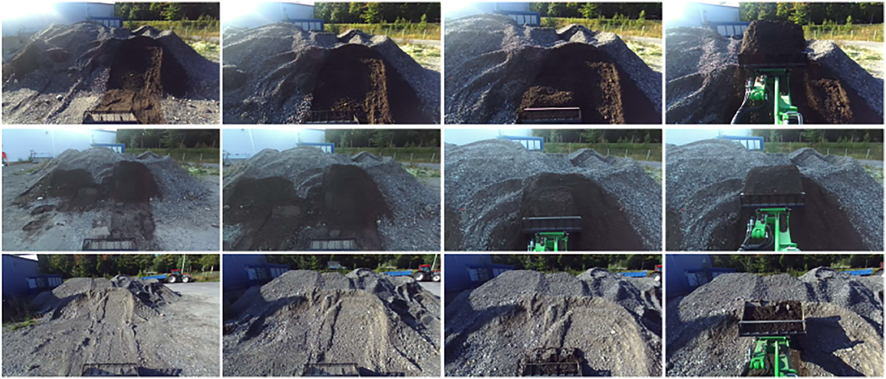
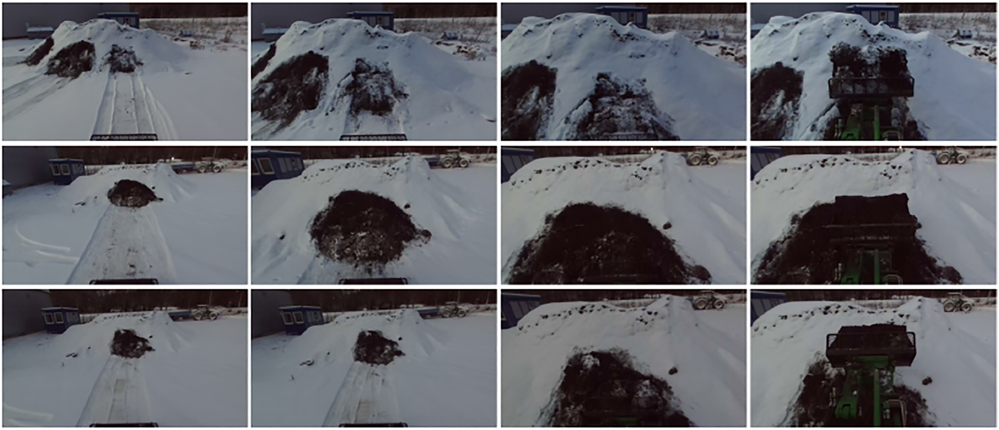
데이터셋의 모든 표본은 성공적으로 수행된 버킷 채우기 시연이다. 시연마다 적재량은 다를 수 있다. 수집 데이터에는 ZED 카메라 영상, 관절 위치, 압력 신호 및 명령이 포함된다. 조작자 또는 제어기가 생성한 명령을 사용하여 작업의 단계와 종단 조건 도달 여부를 수동으로 주석 처리하였다. 단계 식별 알고리즘과 표현 학습에는 시각 데이터만 사용하였다. 각 영상에는 1) 과정의 단계에 해당하는 세 클래스 중 하나, 2) 종단 상태에 속하는지 여부를 나타내는 이진 레이블(-1 또는 1)을 부여하였다.
선행 연구에서는 로봇이 주어진 시각 관측의 보상을 인간에게 질의할 수 있는 Singh et al. (2019)의 접근법을 시도하였다. 관측 상태가 최종 성공 상태인지에 대한 분류 예측으로 기준 보상을 주었다. 원 논문에서는 성공에 가깝다고 예측된 상태의 보상을 질의하였다. 본 연구의 구현에서는 로봇이 올바른 단계를 거쳐 진행할 때 사용자가 보상을 수동으로 부여하였다. 본 작업은 시계열이 훨씬 길었으며 시각 관측의 변동이 더 컸기 때문에 보상 분류가 충분한 정확도를 제공하지 못했다. DDPG RL 알고리즘을 사용하였다(Lillicrap et al., 2015 참조). 실험에서 로봇은 몇 시간 안에 어떠한 해에도 수렴하지 못했다. 이 실험을 계기로 보상 발견 주제를 별도로 연구하게 되었다.
이 절에서는 적재 더미 상차 작업의 단계 발견에 대한 정량적 결과를 제시한다. TCR 표현은 Dsummer에서 훈련하였다. HOG와 VGG 특징은 Dsummer에 근거하여 선택하였다. 다음 시나리오를 실험한다. 1) Dsummer에서 훈련하고 나머지 계절에서 시험한 분류 방법, 2) 여러 계절을 혼합하여 훈련한 분류 방법이다. 시나리오 1은 실용적으로 중요하다. 실제 산업 응용에서는 데이터를 한 번 수집하고 이를 바탕으로 모델을 개발한 뒤 재사용하는 것이 바람직하다. 시나리오 1은 시각 보상에 이러한 가능성이 있는지를 시험한다. 훈련 및 시험 결과를 보고할 때 2-fold 교차 검증을 5회 반복하였다. 즉 데이터의 50%를 훈련에, 50%를 시험에 선택하는 과정을 5회 반복하였다.
시나리오 1 — 표 1은 단계 2와 3의 레이블을 하나의 클래스로 합쳤을 때의 단계 발견 결과를 보여준다. 세 클래스를 사용한 결과는 상당히 불만족스러웠다. 단계 수를 줄임으로써, 즉 기본적으로 장비가 적재 더미로 주행 중인지 퍼내기 동작을 수행 중인지를 발견함으로써 더 합리적인 성능을 달성하였다. 결과는 깊이와 선택된 심층 VGG 특징이 가장 신뢰할 만한 단서를 제공함을 시사한다. 또한 시간 대조 특징은 훈련 데이터에 과적합되고 시험 데이터에서 성능이 저하됨을 보여준다.
| 단계 발견 정확도 [%] | ||||
|---|---|---|---|---|
| 시험 데이터 | ||||
| 특징 | 분류기 | Dsummer | Dautumn | Dwinter |
| HOG | KNN | 78 | 50 | 58 |
| SVM | 80 | 55 | 55 | |
| RF | 79 | 53 | 59 | |
| VGG | KNN | 88 | 68 | 68 |
| SVM | 92 | 62 | 55 | |
| RF | 90 | 63 | 63 | |
| TCR | KNN | 99 | 59 | 43 |
| SVM | 99 | 67 | 56 | |
| RF | 99 | 67 | 56 | |
| Depth | KNN | 84 | 61 | 73 |
| SVM | 82 | 66 | 67 | |
| RF | 89 | 60 | 60 | |
시나리오 2 — 표 2는 모든 계절을 혼합한 집합에서 훈련과 시험을 수행한 결과를 담고 있다. 두 단계 및 세 단계 레이블링의 발견률을 비교한다. 예상대로 모든 계절의 표본이 데이터셋에 포함되었을 때 성능이 크게 향상되었다. 향상의 또 다른 이유는 전체 집합에서 여름 데이터의 비중이 가장 크기 때문이다. 그러나 깊이와 선택된 VGG 모두 95%가 넘는 최고 정확도를 보였다. HOG와 시간 대조 표현은 약간 낮은 성능을 보인다. 그러나 훈련 집합과 시험 집합 사이에서 정확도가 크게 떨어지지는 않는다.
| 단계 발견 정확도 [%] | |||
|---|---|---|---|
| 특징 | 분류기 | 두 단계 | 세 단계 |
| HOG | KNN | 88 | 85 |
| SVM | 74 | 64 | |
| RF | 82 | 75 | |
| VGG | KNN | 95 | 93 |
| SVM | 96 | 94 | |
| RF | 94 | 91 | |
| TCR | KNN | 85 | 74 |
| SVM | 85 | 77 | |
| RF | 77 | 69 | |
| Depth | KNN | 98 | 96 |
| SVM | 90 | 68 | |
| RF | 97 | 96 | |
분류 방법의 경우 접근법 간에 유의미한 차이는 없었다. 대부분의 경우 KNN과 RF 분류기가 더 나은 성능을 보였다. 시간 대조 특징은 시나리오 1에서 훈련 데이터에 과적합되었고 시나리오 2에서는 더 낮은 성능을 보였다. 그 이유는 선행 연구인 Sermanet et al. (2017a)과 달리 시점이 자기중심적이고 동작의 구조가 관측되지 않기 때문일 수 있다. 후속 연구에서는 서로를 보완하는 자기중심 시점과 제3자 시점의 결합을 다루어야 한다.
이 실험에서는 행동 복제 실험에서 이전에 학습하여 성공적으로 입증한 작업 특화 시각 특징을 사용하고자 하였다(Yang et al. (2020) 참조). 각 영상에는 -1 또는 1의 레이블을 부여하였으며, 1은 작업 완료에, -1은 나머지에 해당한다. 앞 절과 마찬가지로 두 시나리오를 시험한다. 1) 여름 데이터 Dsummer에서만 훈련하고 다른 두 데이터셋 Dautumn과 Dwinter에서 시험하는 시나리오, 2) 모든 기상 조건의 표본을 포함하는 혼합 집합에서 훈련하고 시험하는 시나리오이다. 2-fold 교차 검증을 5회 반복하여 사용하였다. 표 3은 이 실험의 결과를 담고 있다. 시나리오 1에서는 계절 간 전이 시 성능이 떨어지지만 시험 계절에 대한 평균 최고 정확도는 약 83%였다. 혼합 데이터 집합에서 훈련하고 시험한 시나리오 2에서는 최고 정확도 95%로 결과를 크게 향상할 수 있었다. 같은 계절(여름)에서 훈련하고 시험했을 때 학습된 특징은 RF 분류기에서 99%의 정확도를 보인다.
| 단계별 정확도 [%] | ||||||||||
|---|---|---|---|---|---|---|---|---|---|---|
| 여름에서 훈련, 다음에서 시험 | 가을에서 훈련, 다음에서 시험 | 겨울에서 훈련, 다음에서 시험 | 혼합 집합에서 훈련 및 시험 | |||||||
| 분류기 | Dsummer | Dautumn | Dwinter | Dsummer | Dautumn | Dwinter | Dsummer | Dautumn | Dwinter | |
| KNN | 98 | 76 | 80 | 78 | 97 | 92 | 74 | 65 | 98 | 95 |
| SVM | 85 | 66 | 78 | 82 | 89 | 94 | 81 | 82 | 94 | 84 |
| RF | 99 | 75 | 90 | 79 | 95 | 92 | 79 | 78 | 97 | 94 |
각 시각 관측 oi에 대해 장비가 현재 수행 중인 단계의 레이블 ci와 작업 완료 여부의 예측을 얻는다. 각 시간 단계에서 이러한 예측을 합산하고 가중합으로 누적 보상을 계산할 수 있다(식 (2) 참조). 그림 8은 여름 및 겨울 시나리오의 누적 보상 예를 제시한다. 단계 예측에 잡음이 있음에도 누적 보상은 큰 영향을 받지 않는다. 단계 분류의 분석은 다음 절에서 제시한다.
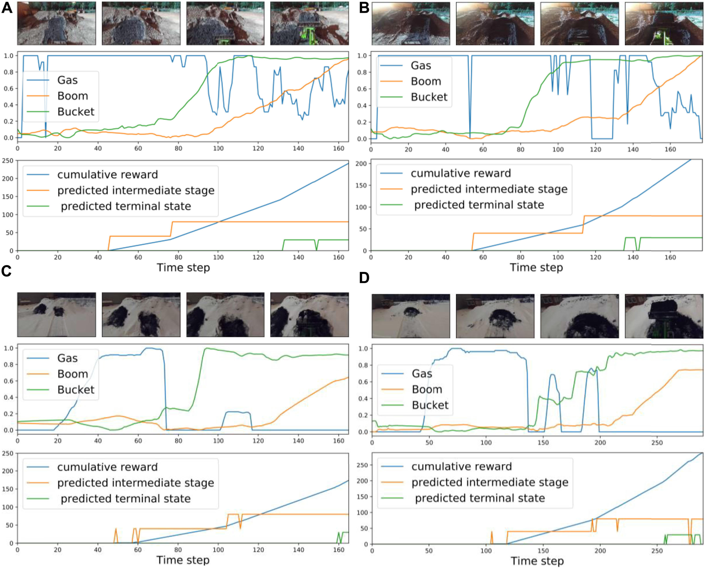
이 절에서는 단계 예측을 상세히 조사한다. 그림 11–13의 각 하위 도표에는 지정된 시각 표현과 분류 방법의 조합에 대한 단계 예측이 포함되어 있다. 각 하위 도표는 데이터셋의 각 에피소드에 대한 결과를 제시한다. 에피소드마다 지속 시간이 다르므로 각 에피소드의 끝은 x축의 가장 오른쪽 끝에 해당한다.
이하에서는 4.4절에서 소개한 시나리오에 따라 결과를 논의한다.
시나리오 1, “여름 데이터에서 훈련” — 그림 9와 10은 두 단계 및 세 단계 분류 작업의 단계 예측 결과를 담고 있다. 정성적·정량적으로 깊이 특징과 KNN의 조합이 다른 조합보다 가장 높은 정확도를 제공한다. 여름 데이터에서만 훈련할 경우 세 단계 분류는 출력에 잡음이 지나치게 많다. 영상의 기하학적 정보를 반영하는 HOG 표현은 시각적으로 TCR 및 VGG 표현보다 더 나은 성능을 보인다. 본 연구의 설정에서 TCR 표현은 작업에 대처하지 못한다. 이는 작은 데이터 집합에서 처음부터 훈련하기 때문일 수 있다. 표본의 변동성을 높이기 위해 데이터 증강 기법을 사용하지만, 조사한 작업에서는 도움이 되지 않는 것으로 보인다. 분류 방법의 경우 RF와 KNN은 유사한 결과를 제공하지만 RF가 KNN보다 계산 효율이 높다.
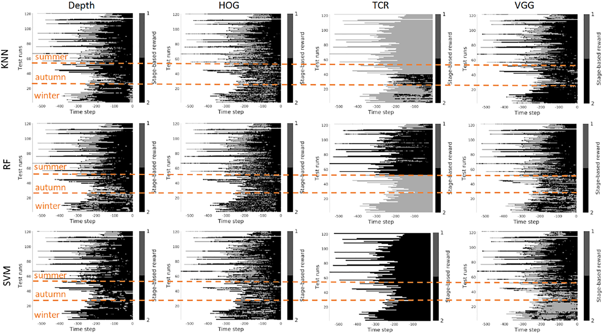
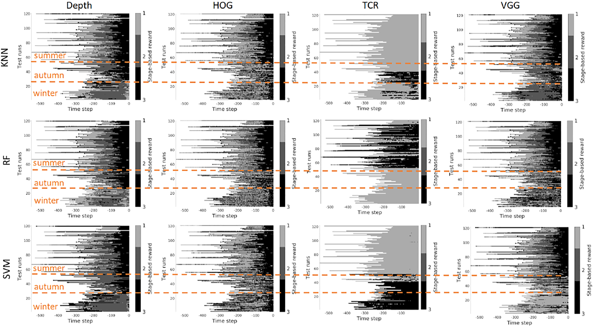
시나리오 2, “혼합 데이터에서 훈련” — 혼합 데이터 집합에서 훈련할 때(그림 11과 12 참조) 결과는 예상대로 상당히 더 좋아 보인다. 깊이 및 VGG를 KNN과 결합한 경우가 최상의 성능을 보인다. HOG는 여전히 TCR보다 나은 것으로 보인다.
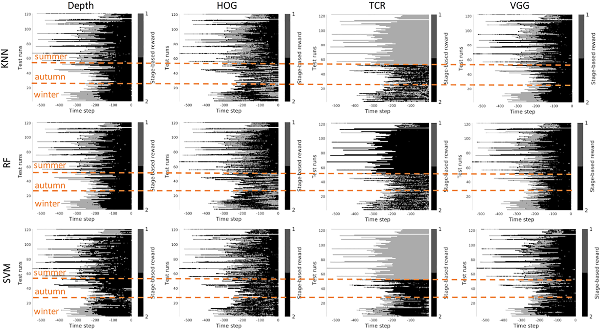
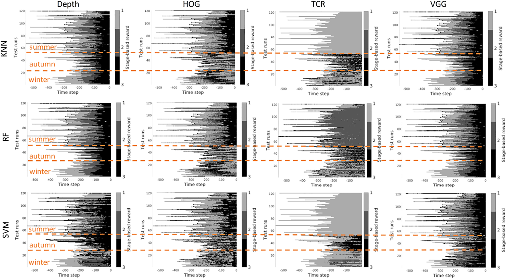
요약 — 본 작업 설정에서는 사용할 수 있는 데이터 집합이 제한적이다. 이러한 조건에서는 증강을 사용하더라도 TCR을 훈련하는 것이 타당하지 않은 것으로 보인다. 또 다른 고려 사항은 선행 연구가 수집 영상에서 동작의 전체 구조가 보이는 작업에서 시간 대조 표현을 성공적으로 사용했으며, 다중 시점 데이터 집합에서 표현을 학습했다는 점이다. 이러한 표현을 더 일반적인 설정에 적용할 수 있는지 조사할 필요가 있다. 본 연구에서는 HOG 특징도 사용하고자 하였다. 이 표현은 시각적으로 논리적인 출력, 즉 단순한 무작위 성능이 아니라 잡음이 있는 순차 출력을 보였다. 그러나 HOG 특징은 실행 시 계산 부담이 상당히 크다. 깊이와 VGG가 최상의 결과를 보였는데, 이는 로봇 응용에서 여전히 물리적 측정에 의존하는 편이 더 낫다는 뜻이다. 사전 훈련된 심층 VGG 특징은 거리 현상을 포착할 수 있는 것으로 보이며, 이에 따라 깊이의 성능에 더 가까워진다.
그러나 세 가지 측면을 고려해야 한다. 1) 실제로 단계 사이에는 명확한 경계가 없고 데이터를 표시한 전문가가 단계 사이의 선을 어디에 그을지 결정해야 했으므로, 인간에 의한 실측 레이블링이 분류 결과에 영향을 미칠 수 있다. 따라서 정성적 결과를 살펴보는 것이 타당하다. 2) 제시한 결과에는 출력의 추가 잡음을 피하기 위해 구현할 수 있었던 어떠한 출력 필터링이나 평활화도 포함되어 있지 않다. 잡음이 있는 출력은 예를 들어 단계 순서에 근거한 상위 수준 논리로도 제거할 수 있다. 3) 오프라인 데이터 집합에서 학습한 보상은 온라인 학습에서 개선되어야 한다.
그림 13은 종단 단계 예측 결과를 보여준다. 이 실험을 통해 차량 제어를 위해 훈련한 작업 특화 대조 특징을 작업의 종단 단계 검출에 사용할 수 있는지 검증하고자 하였다. 모든 계절을 혼합하면 결과가 양호해 보이며 높은 분류율을 제공한다. 그러나 여름에서만 훈련하고 나머지 계절에서 시험하면 결과가 만족스럽지 않다. 이 경우 손실의 대조 부분을 통해 작업의 가시적 측면 가운데 불변인 부분을 학습할 수 있는 것으로 보인다. 종단 단계 분류 결과가 단계 분류보다 더 확고한 또 다른 이유는 작업의 종단 단계, 즉 작업이 완료된 시점을 전문가가 더 쉽게 레이블링할 수 있었기 때문이다.
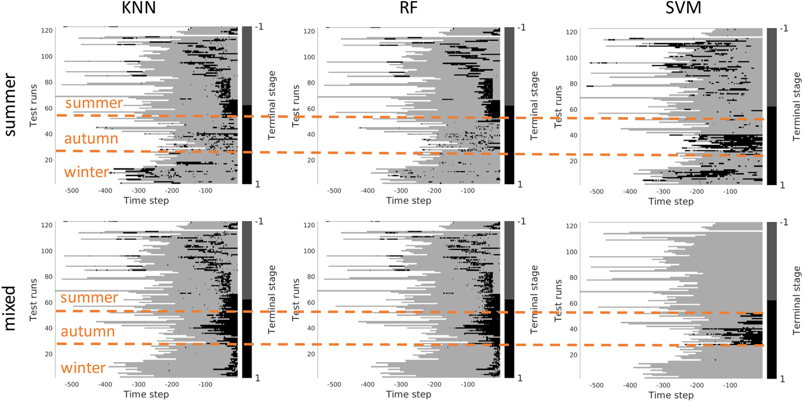
실제 장기 시계열 로봇 작업에 구현한 시각 관측 기반 단계 보상 예측을 탐구하였다. 본 실험 설정에서는 휠 로더가 적재 더미 상차 작업을 수행한다. 보상은 시각 관측으로부터 예측한다. 모방 학습과 강화 학습에 사용되는 가장 일반적인 시각 표현 몇 가지를 실험하였다. 선행 연구에서는 단계 기반 보상과 시각 표현을 모두 실험실 조건에서 시험하였다. 여기서는 세 계절에 걸쳐 수행한 실외 적재 더미 상차 작업의 결과를 보고한다.
본 연구의 질문은 시각 특징과 보상 예측 모델을 계절 간에 전이할 수 있는가였다. 결과는 일반적으로 사용되는 어떤 시각 표현도 성능 손실 없이 여름에서 다른 계절로 전이할 수 없음을 시사한다. 정확도 하락이 가장 작았던 것은 깊이 특징이었다. 모든 계절의 데이터를 혼합하여 최상의 성능을 달성하였다. 이 경우 깊이와 사전에 선택한 심층 VGG 특징으로 가장 신뢰할 만한 결과를 얻었다. 작은 데이터 집합에서 처음부터 훈련할 때 시간 대조 특징은 효율적이지 않은 것으로 보인다. 동작 구조를 반영하는 제3자 시점이 시각 데이터에 포함되지 않을 때는 효과가 더 낮은 것으로 보인다. 실제 구현에서는 훈련 데이터의 레이블링 방법과 계산 측면에서 사용 가능한 특징/분류기 조합을 고려해야 한다.
향후에는 예를 들어 회고적 센서 데이터를 활용한 실측 정보의 자동 생성 문제를 조사할 계획이다. 이 문제는 데이터가 풍부한 도시 환경의 자율 주행을 제외하면 현재 산업 대부분에서 병목인 것으로 보인다. 또한 시각 관측을 단 하나의 보상 수치가 아니라 관측 위치의 지도와 연관 짓는 방법을 연구할 것이다. 행동 계획에 가장 적합한 비용 지도의 형태가 무엇인지 탐구할 것이다.
본 논문의 결론을 뒷받침하는 원자료는 요청 시 저자들이 제공할 것이다.
명시된 모든 저자는 본 연구에 실질적이고 직접적이며 지적인 기여를 하였고 출판을 승인하였다.
본 연구는 Academy of Finland(프로젝트 번호 336357, PROFI 6 — TAU Imaging Research Platform)와 Academy of Finland 프로젝트 번호 310620의 지원을 받았다.
저자들은 잠재적 이해 상충으로 해석될 수 있는 어떠한 상업적 또는 재정적 관계도 없는 상태에서 연구를 수행하였음을 선언한다.
본 논문에 표현된 모든 주장은 전적으로 저자들의 주장일 뿐이며, 저자들의 소속 기관이나 출판사, 편집자 및 심사자의 주장을 반드시 대변하지는 않는다. 본 논문에서 평가될 수 있는 어떠한 제품이나 그 제조업체가 제기할 수 있는 주장도 출판사가 보장하거나 지지하지 않는다.
원문 참고문헌 55개를 원문 서지 표기와 제목을 유지해 수록한다.